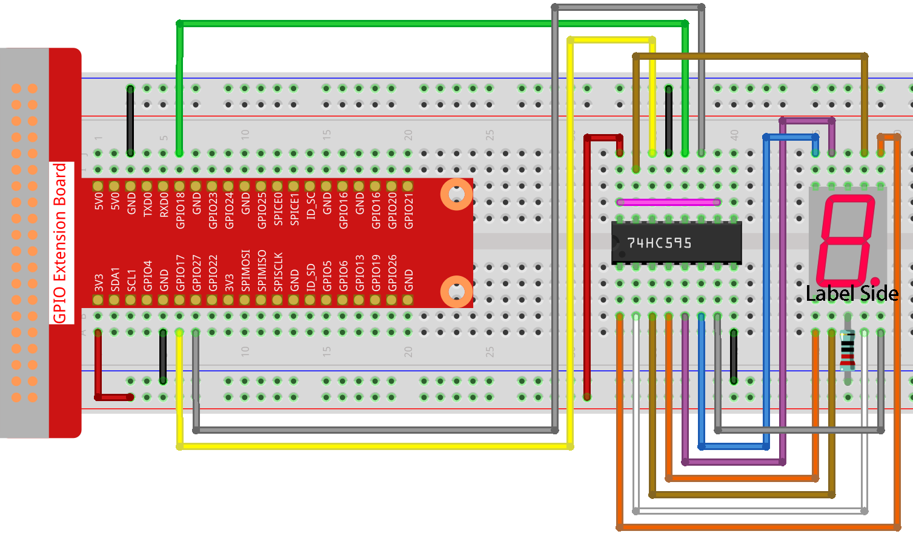

Bemerkung
Hallo, willkommen in der SunFounder Raspberry Pi & Arduino & ESP32 Enthusiasten-Community auf Facebook! Tauchen Sie tiefer in Raspberry Pi, Arduino und ESP32 mit anderen Enthusiasten ein.
Warum beitreten?
Expertenunterstützung: Lösen Sie nach dem Kauf auftretende Probleme und technische Herausforderungen mit Hilfe unserer Community und unseres Teams.
Lernen & Teilen: Tauschen Sie Tipps und Tutorials aus, um Ihre Fähigkeiten zu verbessern.
Exklusive Vorschauen: Erhalten Sie frühzeitigen Zugang zu neuen Produktankündigungen und Vorschauen.
Spezielle Rabatte: Genießen Sie exklusive Rabatte auf unsere neuesten Produkte.
Festliche Aktionen und Gewinnspiele: Nehmen Sie an Gewinnspielen und festlichen Aktionen teil.
üëâ Bereit, mit uns zu entdecken und zu kreieren? Klicken Sie auf [hier] und treten Sie noch heute bei!
1.1.4 7-Segment-Anzeige
Einführung
Versuchen wir, eine 7-Segment-Anzeige zu steuern, um eine Zahl von 0 bis 9 und A bis F anzuzeigen.
Komponenten

Schaltplan
Verbinden Sie den Pin ST_CP des 74HC595 mit dem Raspberry Pi GPIO18, SH_CP mit GPIO27, DS mit GPIO17, die parallelen Ausgangsports mit den 8 Segmenten der LED-Segmentanzeige. Geben Sie Daten in den DS-Pin des Schieberegisters ein, wenn SH_CP (der Takteingang des Schieberegisters) an der steigenden Flanke liegt, und in das Speicheregister, wenn ST_CP (der Takteingang des Speichers) an der steigenden Flanke liegt. Dann können Sie die Zustände von SH_CP und ST_CP über die GPIOs des Raspberry Pi steuern, um serielle Dateneingaben in parallele Datenausgaben umzuwandeln, um so GPIOs des Raspberry Pi zu sparen und die Anzeige zu steuern.

Experimentelle Vorgehensweise
Schritt 1: Bauen Sie die Schaltung auf.
Schritt 2: Gehen Sie zum Ordner des Codes.
cd ~/davinci-kit-for-raspberry-pi/nodejs/
Schritt 3: Führen Sie den Code aus.
sudo node 7-segment_display.js
Nachdem der Code ausgeführt wurde, sehen Sie, dass die 7-Segment-Anzeige die Zahlen 0-9 und die Buchstaben A-F anzeigt.
Code
const Gpio = require('pigpio').Gpio;
const segCode = [0x3f, 0x06, 0x5b, 0x4f, 0x66, 0x6d, 0x7d, 0x07, 0x7f, 0x6f, 0x77, 0x7c, 0x39, 0x5e, 0x79, 0x71];
const SDI = new Gpio(17, { mode: Gpio.OUTPUT });
const RCLK = new Gpio(18, { mode: Gpio.OUTPUT });
const SRCLK = new Gpio(27, { mode: Gpio.OUTPUT });
function hc595_shift(dat) {
for (let j = 0; j < 8; j++) {
let code = 0x80 & (dat << j);
if (code != 0) {
code = 1;
}
SDI.digitalWrite(code);
SRCLK.trigger(1,1);
}
RCLK.trigger(1,1);
}
let index = -1;
setInterval(() => {
index = (index+1)%16;
hc595_shift(segCode[index]);
}, 1000);
Code Erklärung
const segCode = [0x3f,0x06,0x5b,0x4f,0x66,0x6d,0x7d,0x07,0x7f,0x6f,0x77,0x7c,0x39,0x5e,0x79,0x71];
Definieren Sie ein hexadezimales (gemeinsame Kathode) Segmentcode-Array von 0 bis F.
const SDI = new Gpio(17, { mode: Gpio.OUTPUT });
const RCLK = new Gpio(18, { mode: Gpio.OUTPUT });
const SRCLK = new Gpio(27, { mode: Gpio.OUTPUT });
Initialisieren Sie die Pins 17, 18 und 27 im Ausgabemodus und weisen Sie sie den Konstanten SDI, RCLK und SRCLK zu.
function hc595_shift(dat) {
for (let j = 0; j < 8; j++) {
let code = 0x80 & (dat << j);
if (code != 0) {
code = 1;
}
SDI.digitalWrite(code);
SRCLK.trigger(1,1);
}
RCLK.trigger(1,1);
}
Implementieren Sie eine hc595_shift-Funktion, um die Felder im Array segCode in Zahlen umzuwandeln
und sie auf dem digitalen Display anzuzeigen.
let code = 0x80 & (dat << j);
if (code != 0) {
code = 1;
}
SDI.digitalWrite(code);
Weisen Sie die Daten dat bitweise dem SDI(DS) zu.
Hier nehmen wir an, dat=0x3f (0011 1111), wenn j=2, wird 0x3f um 2 Bits nach rechts verschoben (<<).
1111 1100 (0x3f << 2) & 1000 0000 (0x80) = 1000 0000, ist wahr.
Zu diesem Zeitpunkt wird eine 1 an SDI geschrieben.
SRCLK.trigger(1,1);
Erzeugen Sie einen steigenden Flankenimpuls und verschieben Sie die DS-Daten in das Schieberegister.
trigger(pulseLen, level)pulseLen - Impulslänge in Mikrosekunden (1 - 100)
level - 0 oder 1
Sendet einen Triggerimpuls an den GPIO. Der GPIO wird für pulseLen Mikrosekunden auf level gesetzt und dann auf nicht level zurückgesetzt.
RCLK.trigger(1,1);
Erzeugen Sie einen steigenden Flankenimpuls und verschieben Sie die Daten vom Schieberegister in das Speicherregister.
let index = -1;
setInterval(() => {
index = (index+1)%16;
hc595_shift(segCode[index]);
}, 1000);
Verwenden Sie schließlich die Funktion hc595_shift() um die Felder in segCode umzuwandeln
und sie über das digitale Display anzuzeigen.
Phänomenbild